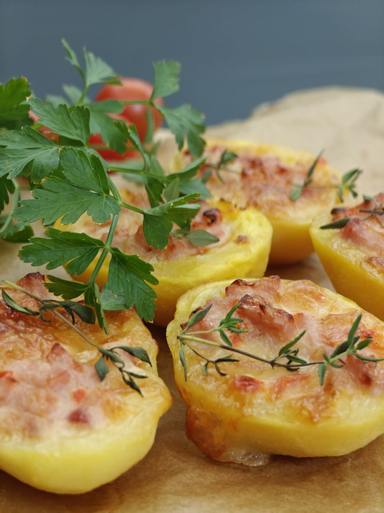
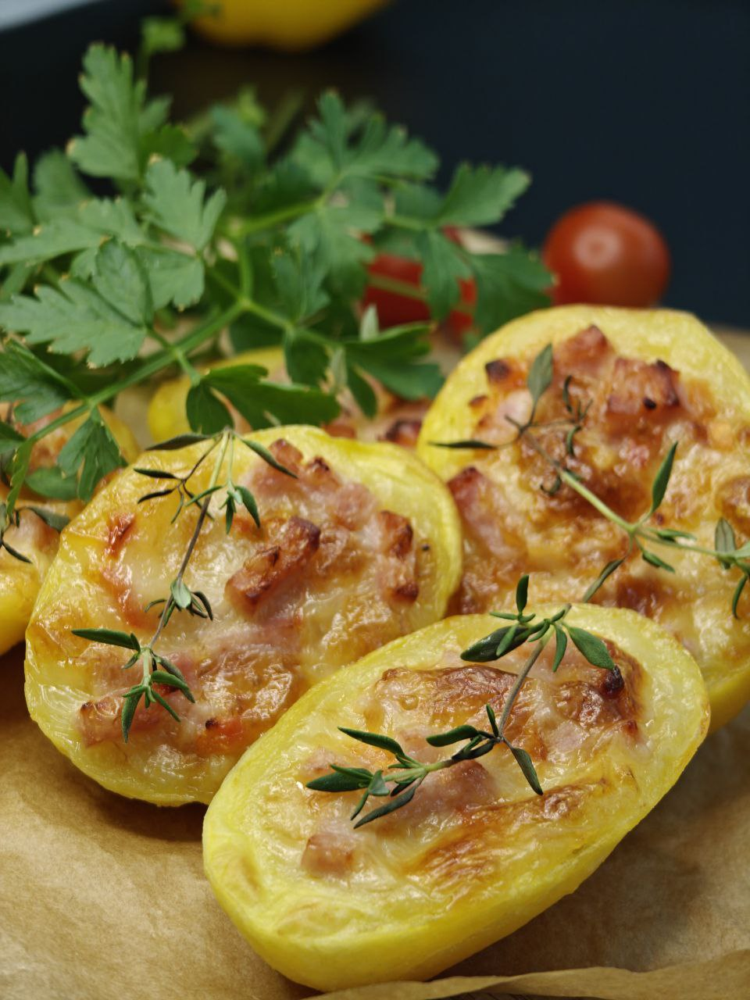
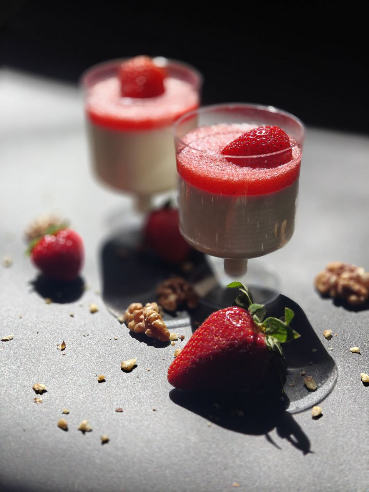
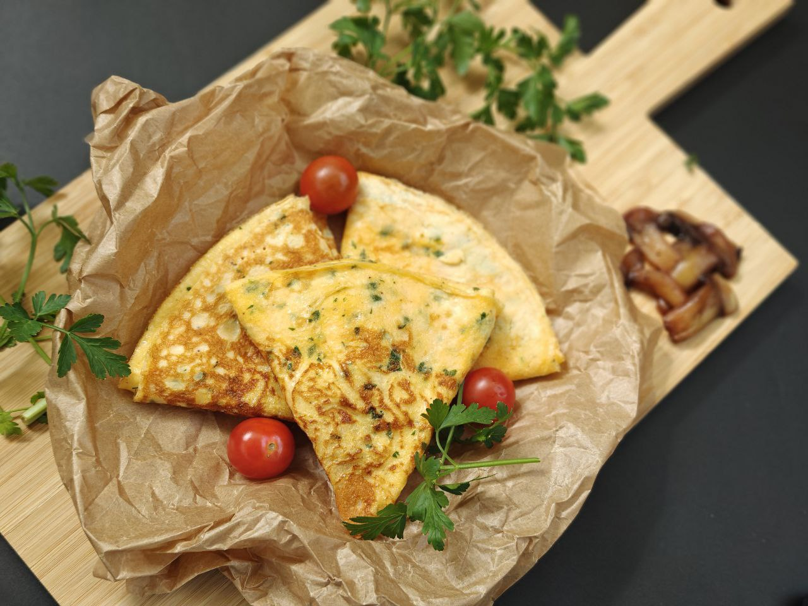

Меню
У ЖИЗНИ ШИРОКИЙ СПЕКТР ВКУСОВ
Концепцией кафе Söör Leiton является классическое кафе.
Быстрое и достойное меню кафе доступно каждый день. У нас только вкусная, здоровая еда и наисвежайшие пирожки по очень приемлемым ценам. При желании еду можно купить с собой!
Напоминаем, что мы открыты и готовы к любым вызовам, по вашим особым запросам. Не стесняйтесь, обращайтесь по e-mail toitlustus@kjvhk.ee или по телефону +372 54 77 0849, +372 54 52 0706.
МЕНЮ ЗАВТРАКА
Завтрак – самый важный приём пищи, который сохраняет здоровье и заряжает необходимой энергией на весь день.
МЕНЮ ОБЕДА
Обед – лучший помощник сохранить хорошее самочувствие и энергию.
ДЕСЕРТ
Это не просто еда – это эмоция, нежно тающая во рту, превращающая обычный день в праздник.
БАНКЕТНОЕ МЕНЮ
Это особое меню «на заказ» для праздника, торжества или события.

Ознакомьтесь с нашим сегодняшним меню
 и
и